Designed for behavior analysis, safety assessment, and trajectory-aware benchmark construction.
Production Autonomous Vehicle Evaluation
PAVE: An End-to-End Dataset for Production Autonomous Vehicle Evaluation
A real-world autonomous-driving dataset built for system-level evaluation of safety, behavior, and trajectory quality beyond perception-only benchmarks.
KITE Lab, The Hong Kong University of Science and Technology (Guangzhou)
Overview
Abstract
Existing datasets such as KITTI, nuScenes, Waymo, Argoverse, nuPlan, and Zenseact Open Dataset mainly support perception tasks and are largely collected from manually driven vehicles. PAVE closes this gap with real-world logs captured under identified autonomous-driving mode, enabling holistic evaluation of driving behavior, safety events, and trajectory quality with synchronized sensors and high-precision localization.
The public subset combines synchronized multi-view imagery, GNSS/IMU traces, and structured scenario metadata.
Released for research, reproducible experiments, and scientific publication under the PAVE academic license.
Sensors
Sensor Setup

Vehicles
Production AVs in PAVE

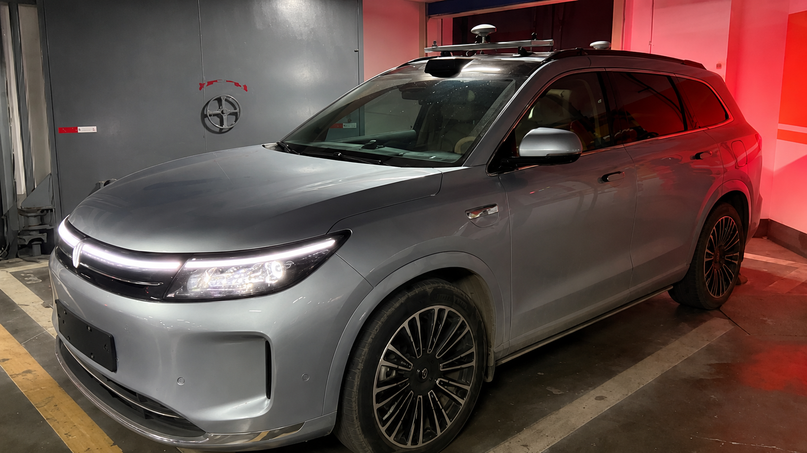
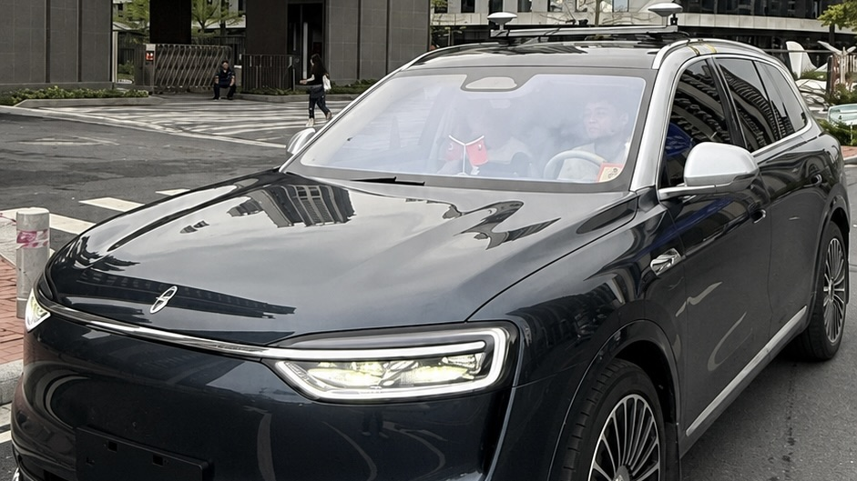
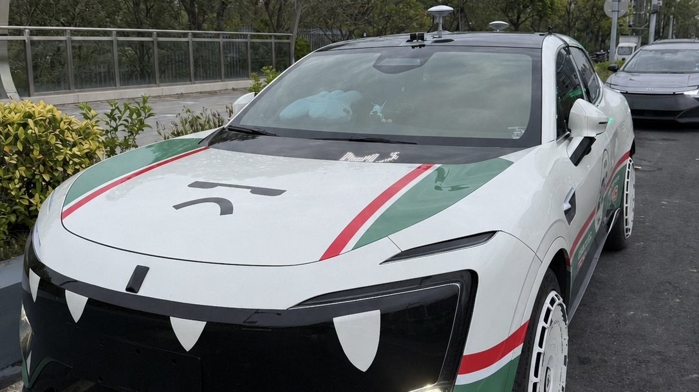
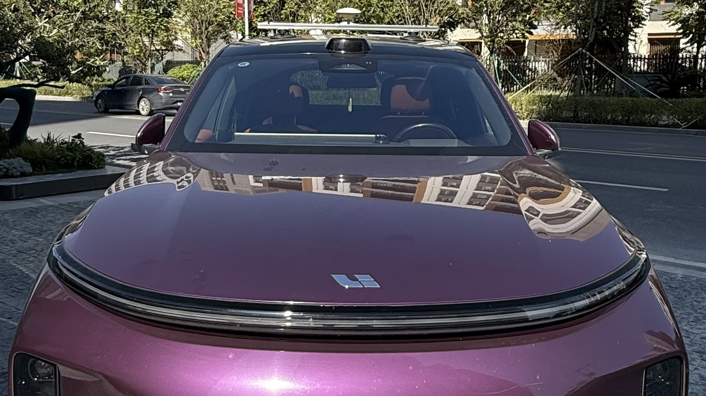
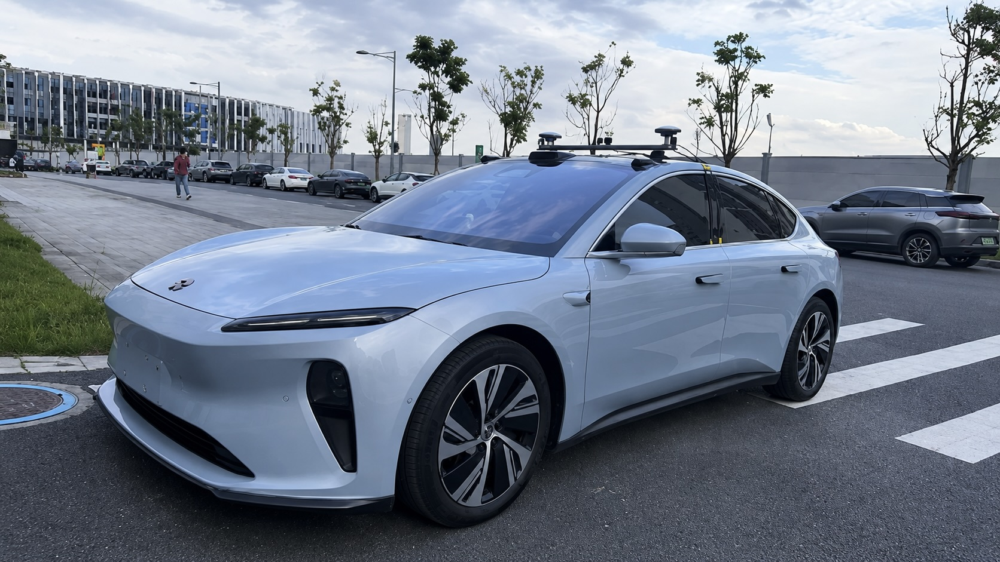
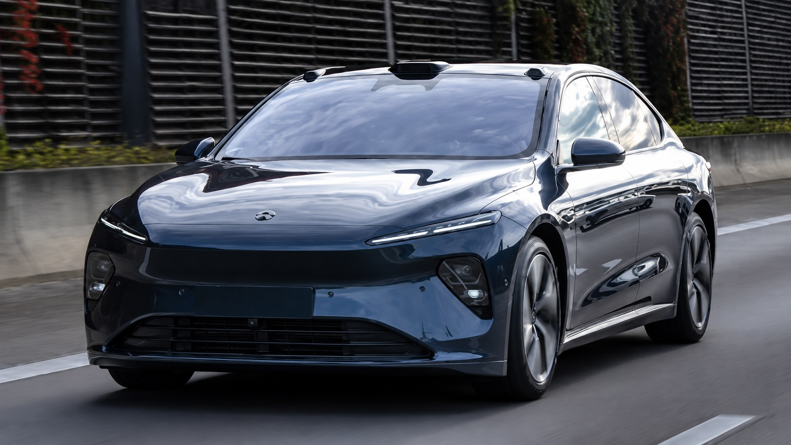
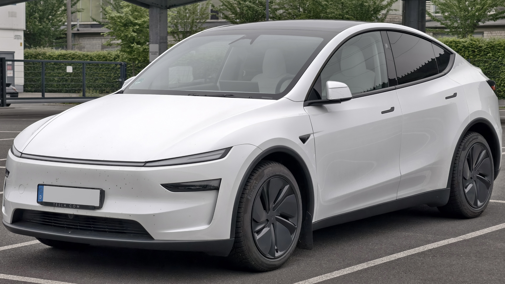
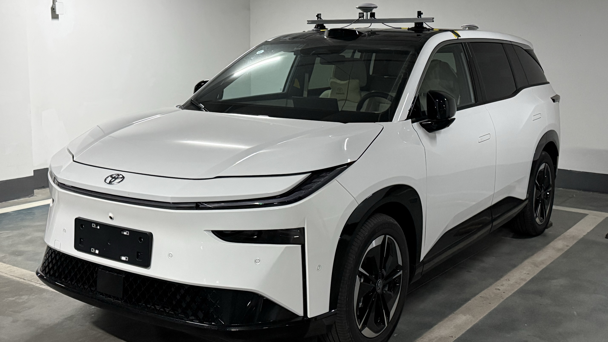
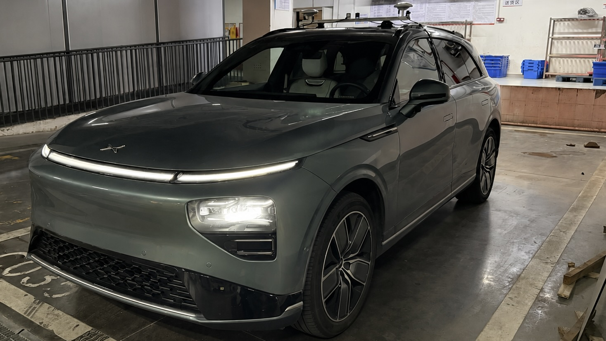
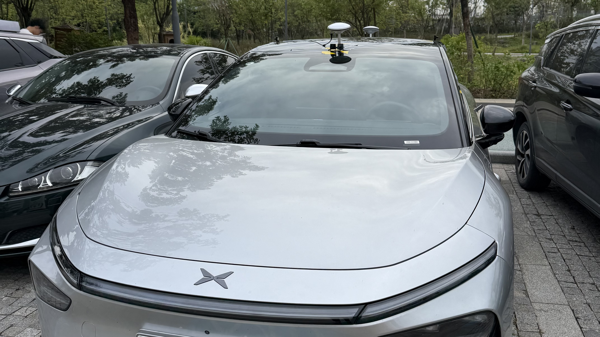
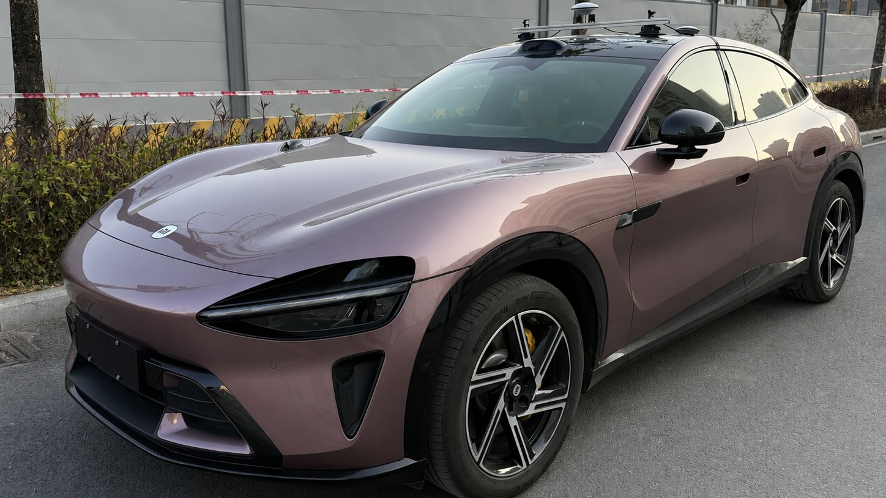
Video
Project Video
Comparison
Dataset Comparison
This table compares representative autonomous driving datasets across perception, motion, and end-to-end categories. Notably, PAVE uniquely provides explicitly labeled autonomous driving mode data, enabling direct analysis of real-world AV behavior.
| Category | Dataset | General | Perception | Trajectory | Tasks | ||||||||||
|---|---|---|---|---|---|---|---|---|---|---|---|---|---|---|---|
| Year | Scenes | Size (h) | Veh. models | Driving mode | Locations | Avg. speed | RGB imgs | Ann. frames | Cams | Accuracy | Attitude | Ann. scenarios | Tasks | ||
| Perception | KITTI | 2012 | 22 | 1.5 | 1 | Human | Karlsruhe | 9.7 | 15k | 15k | 4 | 0.02 m | Yes | No | Det.&Track. |
| ZOD (Frame) | 2023 | – | – | – | H + A (unlabeled) | 14x Europe | – | 100k | 100k | 1 | 0.01 m | Yes | No | Det., Seg. | |
| Waymo Perception | 2019 | 1k | 5.5 | 2 | H + A (unlabeled) | 3x USA | 9.76 | 1M | 200k | 5 | – | – | No | Det.&Track. | |
| Motion | Waymo Motion | 2021 | 100k | 570 | 2 | H + A (unlabeled) | 6x USA | 8.3 | N/A | N/A | N/A | – | – | No | Motion Pred. |
| OpenPAV | 2024 | – | – | Multi | H + A (unlabeled) | Multi-source | 3.2-32.2 | N/A | N/A | N/A | 0.01 - 0.1 m | – | No | Motion Pred. | |
| End-to-End | nuScenes | 2019 | 1k | 5.5 | 2 | H + A (unlabeled) | Boston, SG | 5.1 | 1.4M | 40k | 6 | ≤ 0.1 m | Yes | No | Det.&Track. |
| ZOD (Sequences) | 2023 | 1473 | ~8 | – | H + A (unlabeled) | 14x Europe | – | 294k | 1473 | 1 | 0.01 m | Yes | No | Det., Seg. | |
| Waymo E2E | 2025 | 4021 | ~12 | 2 | H + A (unlabeled) | USA | 5.8 | ~5.5M | – | 8 | – | – | No | Motion Plan. | |
| PAVE | 2025 | 9,255,068 | 310.20 | 11 | H + A (labeled) | 7 major cities in China and USA | 9.9 | 130k | 130k | 4 | 0.008 m | Yes | Yes | Det., Eval. Motion Plan. | |
Vehicles represented in the current database.
Synchronized frame groups.
Driving time after the release validity filter.
Accumulated distance in the local east-north-up frame.
Scenarios
Scenario Coverage and Structured Annotation Schema
The PAVE dataset provides diverse real-world driving scenarios together with structured scenario-level annotations to support systematic condition-aware analysis, subset construction, and reproducible benchmark evaluation.

Area
area_type describes the dominant road context.
highway: expressways, urban expressways, elevated roads, ramps, and toll areas.urban: city arterials, local roads, intersections, and built-up roadside areas.residential: residential, campus, park, or internal community roads.rural: suburban, rural, national, or provincial roads outside dense urban areas.parking: parking lots, garages, or designated parking areas.other: mixed, unclear, or out-of-category road contexts.
Lighting
lighting records the visible illumination condition.
day: sufficient natural daylight, including overcast daytime.dawnanddusk: low-light transition periods around sunrise or sunset.night: general nighttime conditions.night_lit: nighttime with clear artificial or roadside lighting.night_unlit: nighttime with weak or absent artificial lighting.other: mixed or unclear illumination.
Weather
weather describes atmospheric and precipitation conditions.
clear: no notable precipitation or visibility obstruction.cloudy: overcast or mostly cloudy conditions.rain: active rainfall or a wet-road rain context.snow: snowfall or snow-covered surroundings.fog: fog, haze, or visibly reduced atmospheric clarity.other: mixed, unusual, or unclear weather.
Road Surface
road_surface_type describes the drivable surface.
paved: asphalt, concrete, or another finished road surface.unpaved: dirt, gravel, or a temporary construction path.other: mixed or unclear surface conditions.
Driving State
driving_state describes frame-group motion behavior.
- Values:
stop,follow,cruise,lane_change_left,lane_change_right,turn_left,turn_right,other. - Window: the state uses a
6000 mshistory and a4000 msfuture window. - Stop: current speed <
0.5 m/sand future displacement ≤2.0 m; the fallback allows ≤3.0 mwith future speed <0.5 m/s. - Turn: heading change ≥
22°or15°, past/future displacement ≥6/5 m, and current/future speed ≥2 m/s. - Lane change: heading change
2°–18°; the stricter branch starts at4°, with lateral displacement ≥1.0/1.5 mand forward displacement ≥8 m. - Follow: a lead vehicle is within ≤
25 m; without lane geometry, a lead-box center between35%–65%of image width is the same-lane range.
Vehicle and VRU Density
vehicle_density and vru_density summarize the number of road users in a frame group.
- Vehicle:
low≤5,mid=6–15,high>15. - VRU:
low≤3,mid=4–10,high>10. - Vehicle and VRU categories are counted separately and stored as categorical fields.
Traffic Facilities
TrafficFacility records traffic-control objects in the scene.
- Types:
traffic_lightandtraffic_sign. - Fields:
facility_type,mask_format,mask_data,x1/y1/x2/y2,score, andsource. - Presence:
has_traffic_lightandhas_traffic_signare true when at least one matching facility exists in the frame group.
Traffic Participants
TrafficParticipant describes road users visible in individual frames.
- Classes:
vehicle,pedestrian,bicycle,electric_bicycle, andmotorcycle. - Fields:
class_name,mask_format,mask_data,x1/y1/x2/y2,score, andtrack_id. - Geometry:
depth_median_m,depth_mean_m,depth_min_m,depth_max_m,distance_m, andrel_x_m/rel_y_m/rel_z_m.
Lane Lines and 3D Detection
LaneLine stores lane-boundary geometry, while Object3DDetection stores frame-level 3D targets.
- Lane-line fields:
lane_slot,point_format,points_data,point_count,x_min/y_min/x_max/y_max, andsource. - 3D fields:
class_name, original/model 2D boxes,bbox3d_format,bbox3d_data, camera-frame center,width_m/height_m/length_m,yaw_rad, andconfidence. - Both records remain linked to their source
frameand retain raw payload fields when available.
Driving Mode
AV: Autonomous Vehicle.HV: Human-driven Vehicle.Unknown: unavailable or undetermined driving mode.
Data Format
Database Structure and Public Data Format
PAVE uses a synchronized frame group as the primary unit: camera frames, localization, operating mode, scenario attributes, and instance annotations share timestamps and database identifiers.
01
Relational Database Structure
The frame group connects synchronized sensor records with scene-level and frame-level annotations.
Vehicle
1:N
Camera
1:N
Video
GNSS
1:N
FrameGroup
1:N
Frame
FrameGroup relationships
1:1 / N:1
ScenarioAnnotation
SemanticAnnotation
DriverIntent
RoadSlopeState
Frame relationships
1:N
TrafficParticipant
TrafficFacility
LaneLine
Object3DDetection
02
Current Data Tables
Primary keys and foreign keys show how the relational records are connected.
| Table | Key relationship | Current structure |
|---|---|---|
vehicle | id primary key | Vehicle platform metadata, type, identity, model information, and vehicle-level calibration. |
camera | vehicle_id → vehicle.id | Camera role, brand, FOV, image size, intrinsic matrix, distortion, and camera-to-vehicle extrinsic matrix. |
video | camera_id → camera.id | Video path, sequence, UTC time range, FPS, duration, codec, and resolution. |
drive_mode | vehicle_id → vehicle.id | Vehicle-specific mode key, display name, automation level, and description. |
frame_group | vehicle_id, gnss_id, driver_intent_id, road_slope_state_id | Synchronized vehicle-time record with sequence, UTC/local timestamps, localization link, intent, and road-slope state. |
frame | video_id, camera_id, frame_group_id, drive_mode_id | Frame index, timestamp, image path, video time, frame-level driving mode, mode confidence, and ADS indicator state. |
gnss | vehicle_id → vehicle.id | UTC samples with WGS84 position, ENU coordinates, speed, course, RTK status, satellite quality, and INS fields. |
driver_intent | id dictionary key | Driving-intent dictionary such as straight, left, and right. |
road_slope_state | id dictionary key | Road-slope dictionary for uphill, downhill, and flat states. |
semantic_annotation | frame_group_id → frame_group.id | Frame-group text description, language, model metadata, categories, tags, confidence, and notes. |
scenario_annotation | frame_group_id → frame_group.id | Area, lighting, weather, road surface, driving state, densities, facility flags, environmental fields, tags, source, and confidence. |
traffic_participant | frame_id → frame.id | Road-user class, mask, bounding box, score, track identity, depth, distance, and relative position. |
traffic_facility | frame_id → frame.id | Traffic-light/sign type, mask, bounding box, score, source, and facility-level metadata. |
lane_line | frame_id → frame.id | Lane slot, point format, point-set JSON, point count, geometry bounds, and source metadata. |
object_3d_detection | frame_id → frame.id | Object class, 2D/3D boxes, camera-frame center, dimensions, yaw, scores, detector metadata, and raw payload. |
03
Sensor Specifications in the Current Database
Six camera roles are present. A frame group may contain a subset, while localization and optional vehicle signals follow their own timing.
| Sensor / signal | Stored parameters | Frequency / timing | Database representation |
|---|---|---|---|
| RGB cameras | front_wide, front_tele, left_wide, right_wide, rear_tele, inside; FOV, resolution, intrinsic, distortion, and extrinsic parameters. Exterior cameras support 2K at 30 Hz; the inside camera supports 1080p at 30 Hz. | All collected camera data are standardized to 1080p at 10 Hz. | camera, video, and frame |
| RTK-GNSS / INS | WGS84 latitude/longitude/altitude, ENU E/N/U, speed, course, fix state, satellite count, HDOP, RTK fields, and INS attitude/status. | Raw trajectory ≈20 Hz; aligned frame-group records ≈10 Hz; UTC millisecond timestamps. | gnss, linked from frame_group; no independent imu table |
| CAN bus | Optional vehicle-state signals, including available energy or state-of-charge fields. | ≈10 Hz when supported; signal availability varies by vehicle. | No independent can table exists in the current database. |
| Synchronization / frames | UTC timestamps, vehicle frame (x forward, y left, z up), camera frame, and local ENU coordinate convention. | Sensor synchronization error controlled within approximately 50 ms. | Timestamp fields in video, frame, frame_group, and gnss |
Release Layout
Public metadata is serialized as JSON while images remain under the release root.
pave_release/
├── data.json
└── images/
└── <framegroup_id>_<timestamp>_<camera_role>.jpgframegroup_idjoins images, trajectory samples, and labels.- Legacy archives may use
images_blurred/; paths remain relative to the release root. - Frame-group, frame, and track identifiers preserve one-to-many annotation records.
Logical Record
The public record is a frame-group view of the linked database entities; optional values may be empty.
{
"framegroup_id": 123,
"frames": [{
"image_name": "..._front_wide.jpg",
"camera_type": "front_wide",
"camera_calibration": {"intrinsic": "...", "distortion": "...", "extrinsic": "..."}
}],
"timestamp": 1753564625700,
"drive_intent": null,
"drive_mode": "auto",
"objects": [],
"environment": {"weather": "clear", "illumination": "day", "traffic_density": "mid"},
"scenario_category": null,
"language_description": null,
"trajectory": [{"timestamp": 1753564625700, "x_m": 0.0, "y_m": 0.0, "z_m": 0.0, "speed_mps": 2.4}]
}Images are RGB records; trajectory values use SI units and timestamps are milliseconds. The public record does not introduce a separate CAN table.
Highlights
Research-Oriented Release Design
The current public subset is organized to support non-commercial research, method development, and scientific publication around autonomous-vehicle evaluation.
Autonomous-mode Collection
Logs are captured with autonomous driving engaged rather than purely manual operation.
System-level Evaluation
Supports safety and reliability analysis beyond isolated perception metrics.
Trajectory and Behavior Analysis
Structured for AV behavior understanding, trajectory evaluation, and benchmark construction.
Multi-modal Synchronization
Synchronized sensor streams and localization records make temporal alignment first-class.
Privacy-aware Release
Faces and license plates are anonymized to match privacy and compliance requirements.
Benchmark-ready Packaging
Suitable for academic evaluation, reproducible experiments, and future devkit expansion.
Access
Academic Release and Usage Terms
The Dataset is made available solely for non-commercial academic research, method development, education, and scientific publication.
Data Access
Download the released academic subset and browse the project repository.
License Summary
The Dataset is provided under the PAVE Academic Non-Commercial License v1.0.
- Permitted: academic research, scientific investigation, method development, validation, benchmarking, peer-reviewed publication, theses, dissertations, and non-commercial teaching.
- Prohibited: commercial or industrial use, including product/system development, internal industrial evaluation, deployment training, consulting, contract research, or paid services.
- Redistribution, resale, sublicensing, or sharing of the Dataset or any modified or derived version is prohibited.
- Use in a proprietary or closed-source commercial system is prohibited.
- Commercial or industrial use requires a separate licensing agreement.
Usage Conditions
- Any publication, presentation, report, or derivative work using the Dataset must cite the PAVE paper; failure to cite constitutes misuse.
- Dataset use alone grants no authorship or co-authorship; authorship requires a substantial intellectual contribution.
- The Dataset is provided as is, without warranty; the authors and copyright holders are not liable for claims or damages arising from use.
- License violations automatically terminate the license, and all Dataset copies must then be deleted.
- Users must respect data privacy, applicable regulations, and rigorous scientific and ethical standards.
- Unauthorized commercial use will be pursued under applicable licensing agreements.
Full Dataset & Licensing
For full dataset access, commercial licensing, extended access, usage-rights clarification, industrial evaluation services, or extended annotations and benchmarks:
kema@hkust-gz.edu.cnCitation
Please Cite the Dataset Paper
Citation is mandatory for any publication, presentation, report, or derivative work using this Dataset, even partially; failure to cite constitutes misuse.
@inproceedings{li2026pave,
title={PAVE: An end-to-end dataset for production autonomous vehicle evaluation},
author={Li, Xiangyu and Wang, Chen and Liu, Yumao and He, Dengbo and Zhang, Jiahao and Ma, Ke},
booktitle={Proceedings of the IEEE/CVF Conference on Computer Vision and Pattern Recognition},
pages={1010--1018},
year={2026}
}Contact
Dataset Inquiries and Licensing Requests
Please contact the maintainers for full dataset access, commercial licensing, usage-rights clarification, extended benchmarks, or industrial evaluation services.